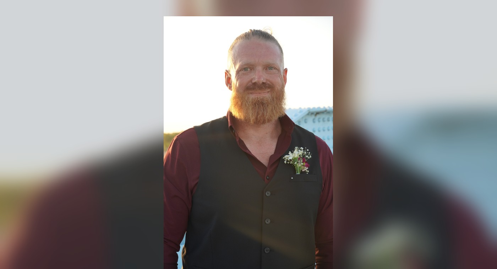

Richard Hacker
Richard Hacker is the Founder, President, and Executive Director of Forged to Serve Foundation. He served five years in the U.S. Army Infantry, including multiple deployments, and held leadership positions as a Team Leader and Weapons Squad Leader. His military experience shaped his commitment to leadership, service, and supporting those who have served.
Richard founded Forged to Serve Foundation because he wanted to continue serving veterans and give back to the men and women who served our country. His goal is to help veterans and their families receive the support, resources, and opportunities they need to build stronger futures.
Why I Serve
After serving five years in the infantry and experiencing deployments and the bond that comes from serving alongside others, I believe the responsibility to serve doesn’t end when you take off the uniform. I want to continue serving veterans and their families, give back to those who served, and make sure they know they are never forgotten or alone.